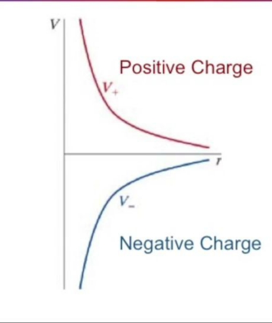

Elektrik ve Manyetik Etkileşimler - Ders 10
Önceki derste
- Elektriksel potansiyel (sonsuz ayırıma göre olan voltaj)
- Potansiyel fark ve elektrik alanı
- Potansiyel fark hesabının yoldan bağımsız olması
Bugün işlenecek konular
- Elektrik potansiyel üzerinden geçmek
- Tek noktadaki potansiyel
- Bir iletken içindeki potansiyel
- Bir yalıtkan içindeki potansiyel
- Bir alanda depolanan enerji
Tek noktadaki elektrik potansiyelle başlayalım: bu hesap mümkün mü? Elektrik potansiyel farkını $E$'nin bir mesafe üzerinen entegralinin negatifi olarak görmüştük, bir çizgi entegraliydi.
$$ \Delta V \equiv -\int_{a}^{b} \vec{E} \cdot \mathrm{d} \vec{x} $$
Elimizde iki nokta yük olduğunu düşünelim. Bu iki yük arasındaki fiziğe bakmıştık. Birbirlerine yaklaşınca çekim hissedilir, uzaklaşınca daha az hissedilir. Eğer yükler birbirlerinden sonsuz (yani çok) uzakta ise, çekim hiç hissedilmez.
Şimdi yüklerden birini sabit tutayım, onu referans yükü kabul edeyim. Serbest olanı sabit olana yaklaştırdıkça çekim etkisi artar, etkileşimin enerjisi artar, artar.. Sabit alanın elektrik alanı var, yaklaşıldıkça o alanın etkisi artıyor doğal olarak. Daha önce yaptığımıza çok benziyor bu, sabit olan pozitif yük etrafına hareketli olan yükün hissettiği potansiyeli değişik mesafelerde hesaplamak istiyorum.
Matematiksel olarak potansiyel hesabı bir fark olduğu için $a,b$ bağlamında bir $b$ gerekli, bu $b$'yi sonsuz uzaklık olarak tanımlıyorum, o uzaklıkta hiç potansiyel hissedilmiyor, o zaman tek bir noktadaki potansiyeli sonsuz uzaklığa kıyasla tanımlıyorum, yani
$$ V_A \equiv V_A - V_\infty $$
Bu tanımın işlemesi için tabii ki $V_\infty = 0$ olmalı.
O zaman, bir yükün elektrik alanı
$$ \vec{E} = \frac{1}{4\pi\epsilon_0} \frac{q}{r^2}\hat{r} $$
olduğuna göre,
$$ V_r - V_\infty = -\int_{\infty}^{r} \frac{1}{4\pi\epsilon_0} \frac{q}{x^2} \mathrm{d} x $$
$$ = \frac{1}{4\pi\epsilon_0} \frac{q}{x} \bigg|_{r}^{\infty} $$
Entegral hesabında çıkartılan tarafta sonsuzluktaki yük $q$ var, ki buna sonsuzluktaki yüke sıfır demiştik, o zaman çıkartmada bu terim yoksayılır. Kalanlarla, noktasal yükün potansiyeli,
$$ V_r = \frac{1}{4\pi\epsilon_0} \frac{q}{r} $$
Pozitif yük için bu azalma $1/r$'ye oranlı olarak alttaki gibi gözükür (kırmızı çizgi). Negatif yük benzer ama yukarı çıkıyor (mavi). Her iki durumda da yatay eksene yaklaşma durumu var.

Kaynaklar
[1] http://hyperphysics.phy-astr.gsu.edu/hbase/electric/potpoi.html